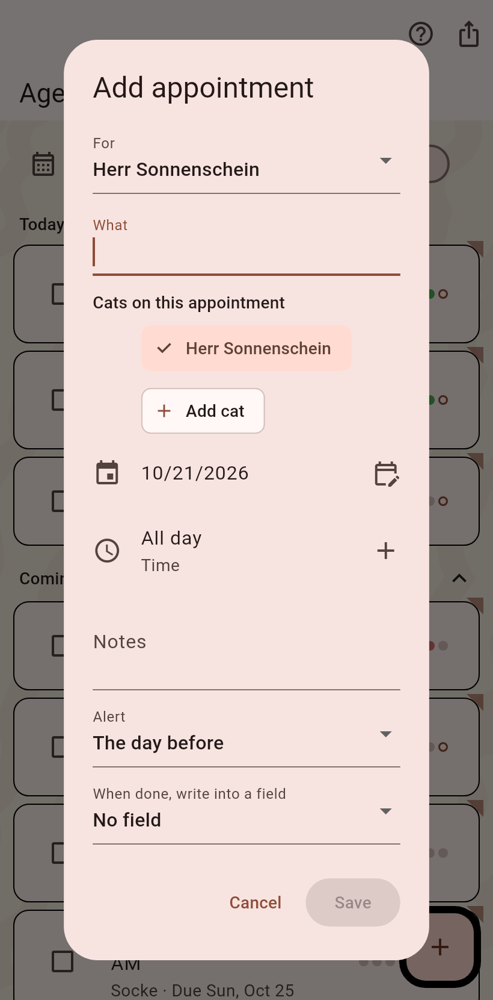
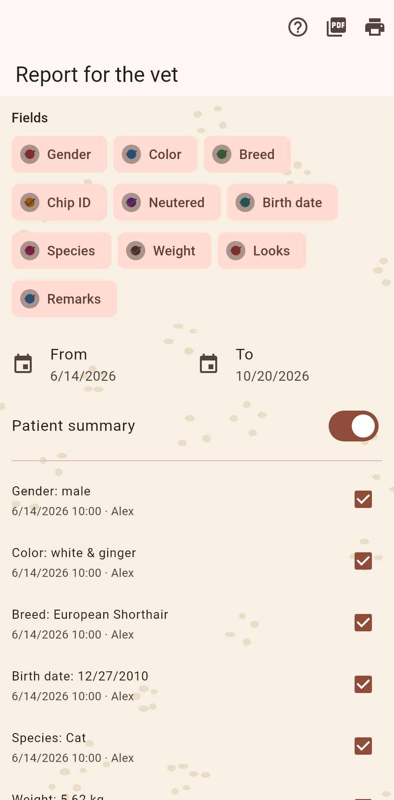

1. The appointment
From the agenda's plus: for whom, what, the day and the time, a note, and the alert the day before. Several cats make it a vet run. Save.

2. The report
Before the visit, the vet report from the cat's page: the fields and dates you pick, the patient summary, a curve per number. Share as PDF or print. Afterwards the box on the agenda finishes the appointment and can write a value into a field.
